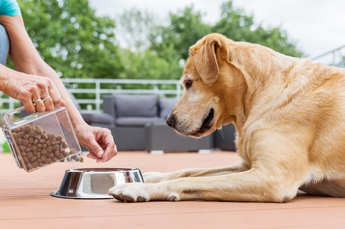
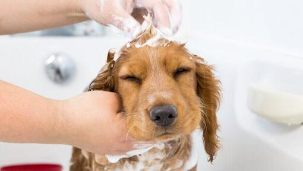
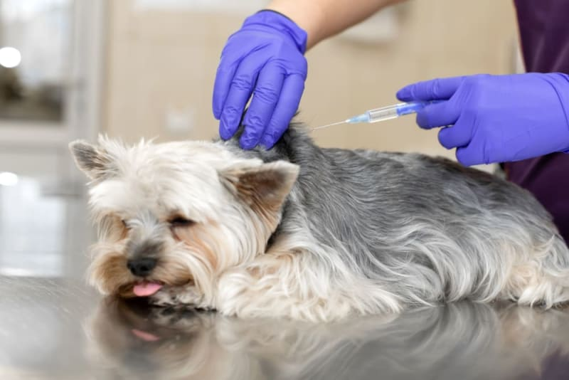
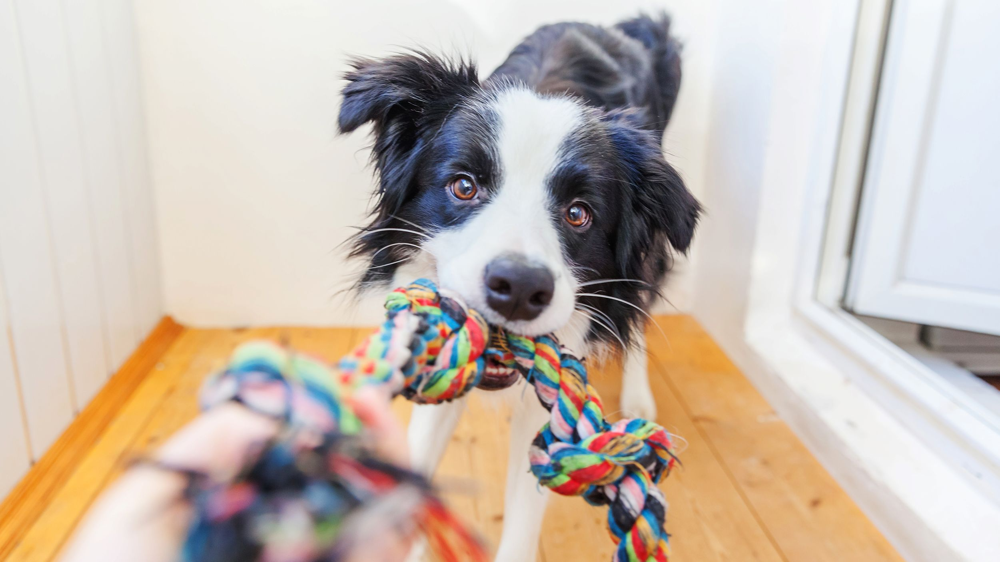

A dog can be a wonderful addition to any home, but whether you're an experienced pet parent or a first-time adopter, it's important to keep your canine companion's health and happiness a top priority. Below are some useful tips for all dog parents.
FEEDING
- Puppies eight to 12 weeks old need four meals a day.
- Feed puppies three to six months old three meals a day.
- Feed puppies six months to one year two meals a day.
- When your dog reaches his first birthday, one meal a day is usually enough.
- For some dogs, including larger canines or those prone to bloat, it's better to feed two smaller meals.
GROOMING
Help keep your dog clean and reduce shedding with frequent brushing. Check for fleas and ticks daily during warm weather. Most dogs don't need to be bathed more than a few times a year. Before bathing, comb or cut out all mats from the coat. Carefully rinse all soap out of the coat, or the dirt will stick to soap residue.
HOW TO TRAIN UR FLUFFY FRIEND

- Use positive reinforcement techniques.
- Find the right reward.
- Consistency is key.
- Train little and often.
- Build up in stages.
- Make it fun.
- Praise the small things.
- Work training into daily life.
VACCINATION
Vaccines help prevent many illnesses that affect pets. Vaccinating your pet has long been considered one of the easiest ways to help him live a long, healthy life. Not only are there different vaccines for different diseases, there are different types and combinations of vaccines. Vaccination is a procedure that has risks and benefits that must be weighed for every pet relative to his lifestyle and health. Your veterinarian can determine a vaccination regime that will provide the safest and best protection for your individual animal.
SCOOP THE POOP
Keep your dog on a leash when you are outside, unless you are in a secured, fenced-in area. If your dog defecates on a neighbor's lawn, the sidewalk or any other public place, please clean it up.
DOG SUPPLY CHECKLIST
- Premium-quality dog food and treats
- Food dish
- Water bowl
- Toys, toys and more toys, including safe chew toys
- Brush & comb for grooming, including flea comb
- Collar with license and ID tag
- Leash
- Carrier (for smaller dogs)
- Training crate
- Dog bed or box with warm blanket or towel
- Dog toothbrush